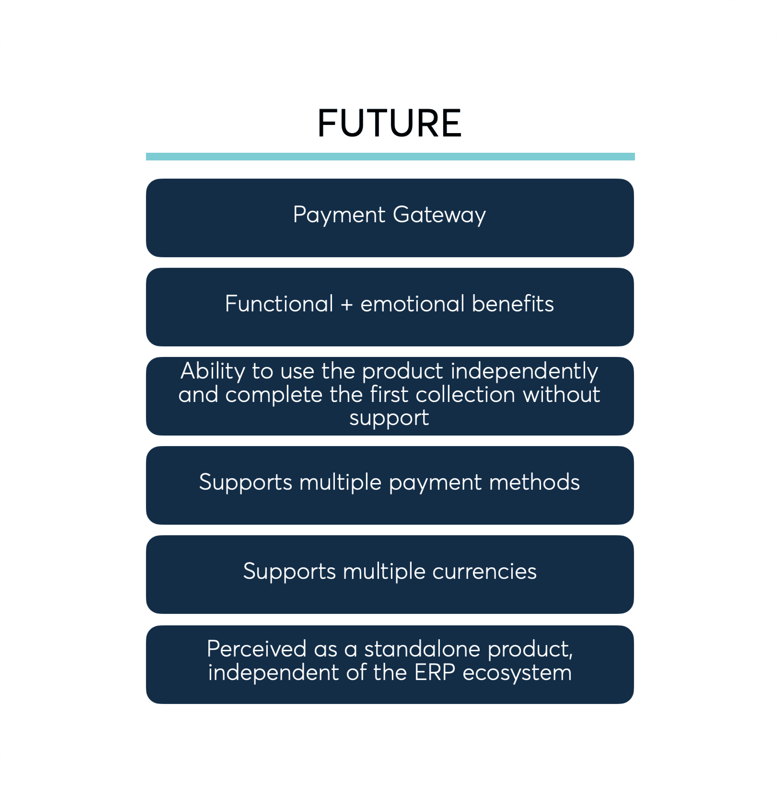
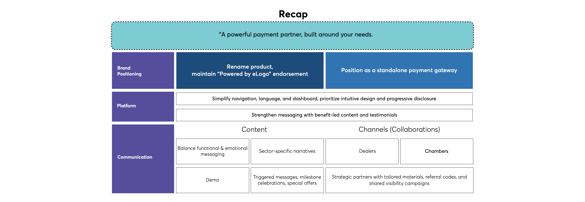

eLogo B2B Payment Gateway: Multi-Sector E-Collection
How strategic discovery across 20+ enterprise sectors and a 14-fintech benchmark shaped the product definition of Logo Yazılım’s next-generation B2B e-collection platform.

01. B2B Multi-Sector Discovery: The Cashflow Friction
eLogo (the fintech subsidiary of Logo Yazılım, Turkey’s largest ERP vendor) identified critical collection inefficiencies across 20+ corporate verticals—including construction material distribution, wholesale FMCG, and automotive spare parts.
Corporate buyers and sellers were trapped in manual bank transfers, unverified payment receipts, and disconnected accounting ledgers that took days to reconcile.
02. 14 Global & Local Fintech Benchmarks
I conducted an exhaustive competitive audit of 14 enterprise payment gateways (Stripe Connect, Adyen, Braintree, PayU, and Turkish bank virtual POS APIs).
“B2B transactions require flexible payment term scheduling, partial settlement matching, and ERP ledger reconciliation—capabilities fundamentally absent in consumer B2C checkout flows.”

03. Information Architecture & Gateway Flow
I architected the dual-sided platform structure: an administrative merchant dashboard for corporate finance teams, and a friction-free payment portal for corporate debtors supporting single-link payments, recurring installments, and multi-currency billing.

04. ERP Integration & Market Impact
The product blueprint established direct automated reconciliation with Logo Tiger and Logo Netsis ERP suites, transforming manual collection reconciliation from days to instantaneous automated ledger updates.